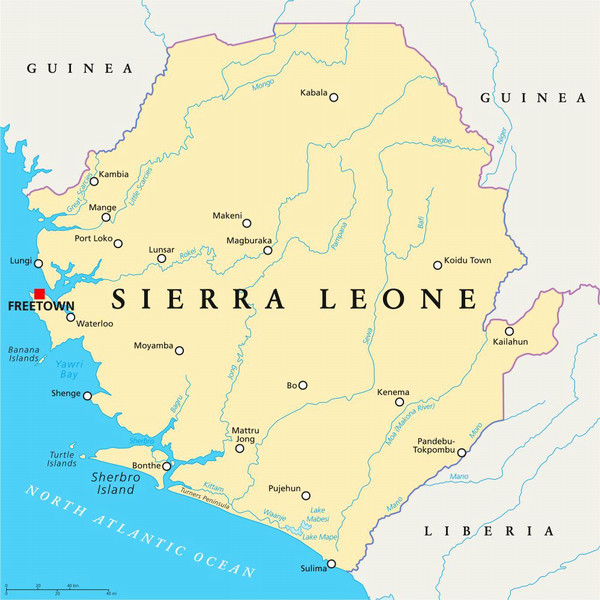

Explore Sierra Leonean languages
Learn the languages that connect a community
Discover the languages spoken across Sierra Leone and begin exploring their words and cultural meaning.

About the Project
This application is dedicated to celebrating, preserving, and providing learning resources for native languages spoken across Sierra Leone.
Featured Languages
- Krio: The widely spoken English-based creole that serves as a common lingua franca throughout Sierra Leone.
- Limba: One of the oldest indigenous languages of Sierra Leone, primary to the northern region.
- Temne: A major language widely spoken across the Northern Province and the Western Area.